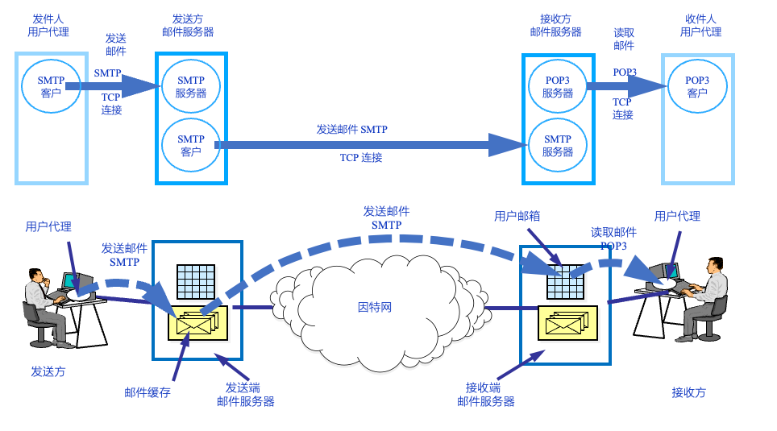

应用层¶

网络应用模型¶
客户-服务器模型(C/S)¶

- C/S模型可以是面向连接的,也可以是无连接的
- 面向连接的C/S通信关系一旦确认,通信就是双向的,双方地位相等,都可以发送和接受报文
- 网络管理非常集中和简单
- 网络中各计算机的地位不均等,整个网络的工作主要有少量的服务器承担
- 客户之间不能直接进行通信
点对点模型(P2P)¶

- 不存在永远在线的服务器
- 每台主机既可以提供服务,与可以请求服务
- 任意端系统/结点之间可以直接通信
- 结点间间歇性接入网络
- 结点可能改变IP地址
DNS域名系统¶
- 计算机直接通过IP地址通信,但IP地址对于人来说是不可读的
- DNS的功能就是给IP地址映射一个人类可以读/记忆的域名
域名系统采取层次化的树状结构,按级划分.

域名服务器对域名进行正/反两方面解析,也按照层次化树状结构部署

域名解析过程 有 递归查询 和 迭代查询 两种方式
- 主机向本地域名服务器查询一般采用递归查询
- 本地域名服务器项根服务器可以采用递归查询,但一般优先采用迭代查询
递归查询过程

- 一次查询,返回结果给上级服务器
迭代查询过程

- 一次查询,返回一个结果给本地域名服务
电子邮箱¶
简单邮件传送协议(SMTP)
- 采用 用户-服务器模式
- 主要有 用户代理,邮件服务器,电子邮件传输协议三个主要构建组成
- SMTP邮件发送协议
- PoP3邮件读取协议
- 采用TCP连接

邮件格式与 MIME¶
电子邮件由 信封+内容 组成,信封上面有收件人地址.


- 由ASCII码组成
- 必须包含一个From:首部和一个To:首部.其余都为可选首部
- Cc: 表示给某个收件人发送一份副本
- Bcc: 发件人可以将邮件副本发送给某一个收件人,但收件人不知道发件人是谁
- Repl-To: 表示对方恢复邮件所用的地址.
电子邮件的地址 yyyy@ xxx.xxx.xxx
- yyyy 接收人邮箱名
- 用户名在该域名范围内是唯一的
- xxxx.xxx.xxx 邮箱所在的域名
- 主机域名在全世界是唯一的
MIME 多用途INternet邮件拓展,基本格式的多媒体拓展,可传输
- 多媒体消息
- 二进制文件
SMTP和PoP3协议¶

SMTP 简单邮件传送协议
- 发送邮件时候的协议
- 使用 ^客户-服务器^方式,规定了两个相互通信的SMTP进程之间交换信息的方法
- 一个邮件服务器既可以作为客户页可以作为服务器
- 基于文本(ASCII)的协议, 邮件必须为 7位 ASCII码
- 基于 TCP 连接,端口号为 25

- 首先建立TPC连接
- 服务器发送 220 Service Ready
- 客服号发送 HELO 并加上自身的主机名
- 若服务器有能力接受邮件则发送 220 OK

- 邮件发送首先从 MAIL 命令开始
- 发送完信封,使用 DATA 命令表面开始发送邮件内容

- 由客户端发送 QUIT 命令表面释放SMTP服务
- 服务器发送 221 Service close 命令表示同意释放
- 执行TCP释放连接的过程(四次挥手)
POP3 邮局协议第3个版本
- 邮件读取协议
- 使用客户-服务器工作方式
- 基于TCP连接,端口号为110
- POP由三个阶段组成
- 认证 处理用户的登录过程
- 事务处理 用户收取电子邮件,并将邮件标记为删除
- 将标记为删除的电子邮件删除
文件传送服务¶
FTP 文件传输协议
FTP协议的工作原理¶

- 使用TCP连接, 使用两个端口 20/21
- 服务器进程主动打开TCP21端口,等待客户进程发出的连接请求
- 客服分配任意一个本地端口号,与服务器的21号端口建立TCP连接
- 客户端请求到来的时候,服务器启动从属进程来处理客户端发起的请求
- 服务器有一个主进程和若干从属进程
- 主进程负责接受新的请求
- 从属进程处理单个请求
主动模式(PORT模式)

- 数据通道连接发起方为服务器端
- 服务器使用20号端口连接客户端的Y端口建立数据连接
被动模式(PASV模式)

- 数据通道连接发起方为客户端
- 客户端使用端口号Y取连接服务器的数据端口Z
Web服务¶
URL 统一资源定位符 负责标识万维网上的各种文档,并使每个文档在整个万维网的范围内具有唯一的标识符即URL.
基本形式 <协议>://<主机:<端口>/<路径>
- 协议 指明用说明协议来获取文档,常用协议有 http,ftp等
- 主机 存放资源的主机的IP地址
- 在URL中不区分大小写
万维网的概念与组成结构¶
万维网 无数个网络站点与网页的集合
- 使用客户/服务器模式工作
- 浏览器是客户程序
- 基本流程
- Web用户使用浏览器(指定URL)与Web浏览量建立连接,并发送请求
- Web服务器把URL转换为文件路径,并返回给Web浏览器
- 关闭连接
HTTP协议¶
HTTP 超文本传输协议,定义了浏览器如何向万维网服务器请求万维网文档,以及服务器如何将文档传输给浏览器.

- 使用TCP连接,默认端口号为80
- HTTP协议本身是 无连接的
- 交换HTTP报文之前不需要建立HTTP连接
- HTTP是无状态的
- 通常使用 Cookie加数据库的方式来跟踪用户活动
- Cookie基本原理 当用户访问具有Cookie功能的网站的时候,服务器为该用户产生一个唯一的Cookie识别码,并以此为索引在后端数据库中创建一个项目,记录用户访问该网站的各种信息.并返回一个带有 Set cookie:xxxx的首部行的响应报文,客户端接受次报文后,在本地Cookie管理文件中添加该服务器的主机名和Cookie识别码.
- 当用户再次浏览该网页的时候,在请求报文中添加 Cookie xxxx,服务器识别该Cookie标识符,从数据库中提取相应用户数据\设置等内容
- HTTP/1.0 无持久连接, HTTP/1.1 持久连接(流水线\非流水线模式)

HTTP报文
- 面向文本(ASCII码),每个字段的长度是不确定的
- 请求报文\响应报文
请求报文

- 方法 对所请求的对象进行的操作,决定请求报文的类型
- OPTION 请求一些选项信息
- GET 请求读取由URL所标志的信息
- HEAD 请求读取由URL所标志的信息的首部
- POST 给添加信息
- PUT 在指明的URL下存储一个文档
- DELETE 删除指明的URL所标志的资源
- TRACE 环回测试
- CONNECT 用于代理服务器
- URL 请求资源的URL
响应报文


HTTP协议工作流程

应用层协议小结¶